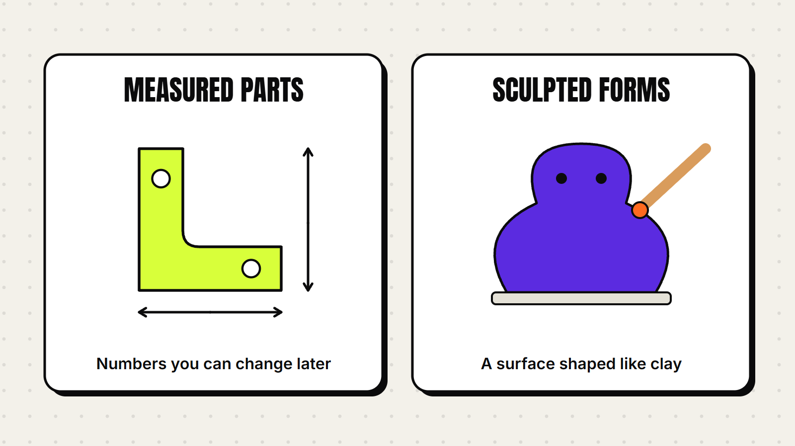
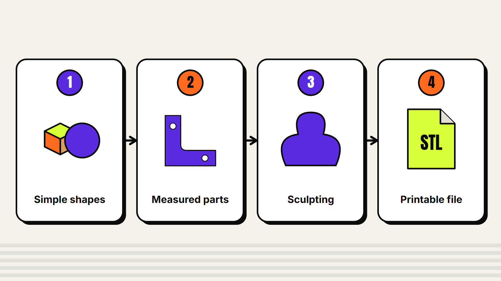

You have an idea and want to turn it into a 3D file. Dozens of programs can do it, which makes the first choice confusing. The good news is that several capable tools cost nothing to start with. The best one depends on what you want to make. This guide sorts them by the kind of object, and suggests a path from first shape to printable part.
Solid or parametric modelling builds objects from measured shapes: boxes, cylinders, holes, and fillets. Change a number and the model updates. It suits brackets, boxes, holders, and anything that must fit.
Mesh or sculpting tools shape a surface like digital clay. They suit characters, ornaments, and organic forms.

| Software | Style | Good for | Cost note |
|---|---|---|---|
| Tinkercad | Simple solid shapes, in a browser | First projects, school work, simple parts | Free to use under its terms |
| FreeCAD | Parametric | Precise mechanical parts | Free and open source |
| Fusion | Parametric with advanced tools | Serious product design | Free personal licence with limits for non-commercial use |
| Blender | Mesh and sculpting | Characters, art, organic shapes | Free and open source |
Licence terms and features change. Read the current terms before using any tool for paid work.
If you have never modelled, a browser tool with drag-and-drop shapes is a gentle first step. You can make a keychain, a simple holder, or a tray in an afternoon of practice. When you need precise dimensions and changes you can adjust later, move to a parametric tool. If you love figures and decoration, try a sculpting tool.

Measure your cable. Draw a short tube slightly wider than it, cut a slot so the cable can pass in, and add a flat base for tape. Print it, test it, and adjust the slot. One small clip teaches units, subtraction, clearance, and testing.
Our guides to designing for print and preparing files help you avoid them.
Model-sharing websites offer many files. Check the licence on each. Some allow personal use only, some require credit, and some forbid selling or paid printing. See licences and 3D printing.
Open your export in a free slicer. It shows the layers, highlights problems, and warns about thin features. If it looks right layer by layer, it has a good chance of printing.
Tip: Save a new version each time you change something. You can always go back when "bracket_v2" still exists.
Pick one tool and finish three small objects with it before switching. Follow the official tutorials, which match the current version better than old videos. When something fails, describe the exact step to a community forum, with a picture. Most beginners hit the same few hurdles, and someone has solved them already.
Keep a notebook of settings that worked: the wall thickness that held, the clearance that slid, the font that printed. After a few projects it becomes more useful than any general guide, because it is about your printer and your parts. Remember that software changes often, so a menu in an old tutorial may have moved. Focus on the idea behind each step, such as cutting one shape from another, and you can find the button in any program.
Browser tools run on modest machines. Detailed sculpting and large assemblies benefit from more memory and a better graphics card. Check each program's stated requirements before installing.
Some apps allow it, and they are fine for rough ideas. A mouse and keyboard make precise measurements and editing much more comfortable.
STL or 3MF for printing, and STEP if someone needs to edit the exact shape. Our file preparation guide explains the differences and the checks to run.
Many people print a simple clip or tray after their first few practice sessions. Accurate multi-part designs take longer, and each project teaches something specific.
Practise by copying simple things on your desk: a bottle cap, a drawer knob, a tray. Measure each one, model it, and compare your version with the original. You will learn where rounded edges matter, how thick walls really are, and which measurements affect fit, which tutorials rarely teach as clearly.
If learning software is not how you want to spend your evenings, that is fine. Send a sketch, photos, and measurements through our design service, or attach what you have to a quote request. We model original designs and show you a preview before printing.